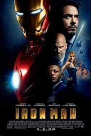
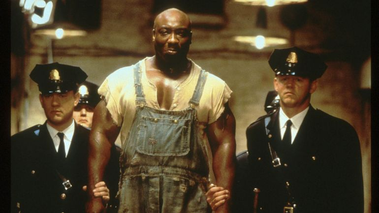
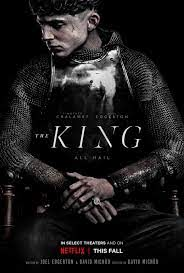
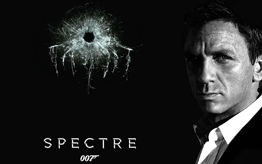
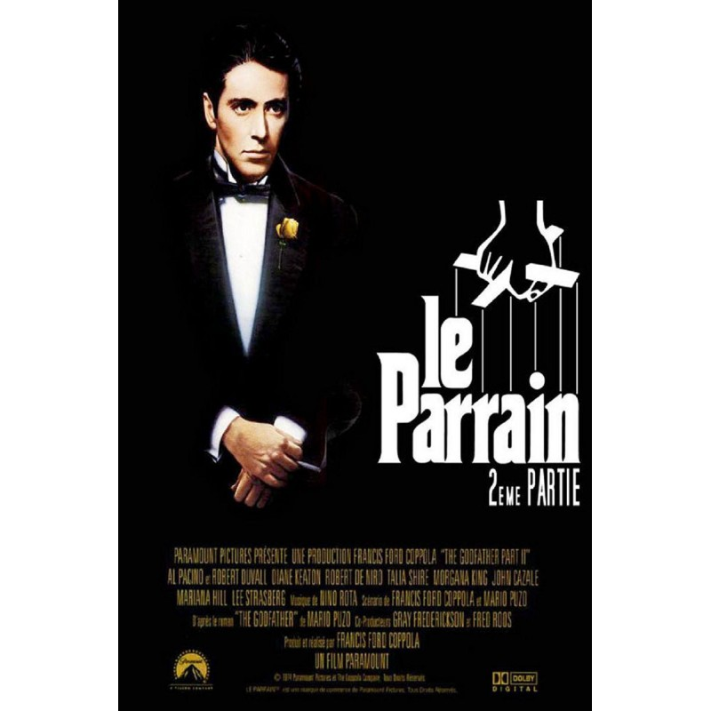

The Good is Blondie, a wandering gunman with a strong personal sense of honour; the Bad is Angel Eyes, a sadistic hit man who always hits his mark; and the Ugly is Tuco, a Mexican bandit who's always only looking out for himself. Against the backdrop of the Civil War, they search for a fortune in gold buried in a graveyard. Each knows only a portion of the gold's exact location, so they must work together.
Iron Man
Jon Favreau

Action
Tony Stark, inventeur de génie, vendeur d'armes et playboy milliardaire, est kidnappé en Aghanistan. Forcé par ses ravisseurs à fabriquer une arme redoutable, il construit en secret une armure high-tech révolutionnaire qu'il utilise pour s'échapper. Comprenant la puissance de cette armure, il décide de l'améliorer et de l'utiliser pour faire régner la justice et protéger les innocents.
La ligne verte
Frank Darabont

Drame
Paul Edgecomb, pensionnaire centenaire d'une maison de retraite, est hanté par ses souvenirs. Gardien-chef du pénitencier de Cold Mountain, en 1935, en Louisiane, il était chargé de veiller au bon déroulement des exécutions capitales au bloc E (la ligne verte) en s'efforçant d'adoucir les derniers moments des condamnés. Parmi eux se trouvait un colosse du nom de John Coffey, accusé du viol et du meurtre de deux fillettes.
The King
David Michôd

Drame Historique
Hal est un jeune prince rebelle, qui décide de quitter le royaume afin de vivre auprès du peuple. Cependant, le jeune prince ne peut plus échapper au destin qu'il tentait de fuir suite à la mort de son père, le tyrannique Henri IV d'Angleterre. Il est couronné roi à son tour et le jeune Henri V doit désormais affronter le chaos laissé par son père derrière lui. Le passé resurgit, et notamment sa relation avec son ami et mentor, John Falstaff, un chevalier alcoolique.
Apocalypse Now
Francis Ford Coppola
Guerre
Pendant la guerre du Vietnam, un agent de l'armée américaine s'aventure au Cambodge à la recherche d'un tyran dangereux, le colonel Kurtz, autrefois un soldat modèle qui s'est converti plus tard à la cause de l'ennemi.
Borat 2
Django
Spectre
Sam Mendes

Espionnage
Un message cryptique surgi du passé entraîne James Bond dans une mission très personnelle à Mexico puis à Rome, où il rencontre Lucia Sciarra, la très belle veuve d'un célèbre criminel. Bond réussit à infiltrer une réunion secrète révélant une redoutable organisation baptisée Spectre. Pendant ce temps, à Londres, Max Denbigh, le nouveau directeur du Centre pour la Sécurité Nationale, remet en cause les actions de Bond et l'existence même du MI6, dirigé par M.
The Godfather
Francis Ford Coppola
Crime
En 1945, à New York, les Corleone sont une des 5 familles de la mafia. Don Vito Corleone, `parrain' de cette famille, marie sa fille à un bookmaker. Sollozzo, `parrain' de la famille Tattaglia, propose à Don Vito une association dans le trafic de drogue, mais celui-ci refuse. Sonny, un de ses fils, y est quant à lui favorable. Afin de traiter avec Sonny, Sollozzo tente de faire tuer Don Vito, mais celui-ci en réchappe.
The Godfather 2
Francis Ford Coppola

Crime
Depuis la mort de Don Vito Corleone, son fils Michael règne sur la famille. Amené à négocier avec la mafia juive, il perd alors le soutien d'un de ses lieutenants, Frankie Pentageli. Echappant de justesse à un attentat, Michael tente de retrouver le coupable, soupçonnant Hyman Roth, le chef de la mafia juive.